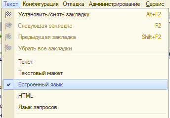
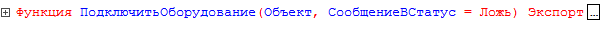
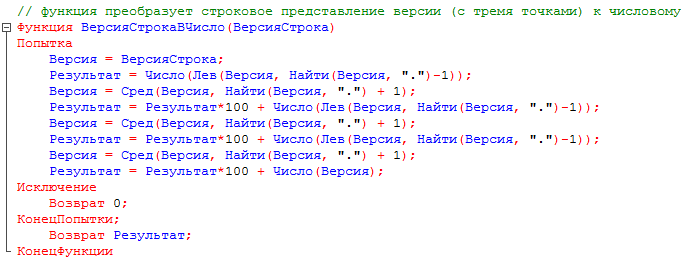
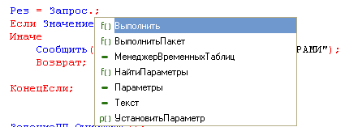

1 HTML-редактор можно использовать:
2 Вызов HTML-редактора можно осуществить:
3 Закладка "Текст" HTML-редактора предназначена:
4 Можно ли в HTML-документ помещать картинки?
7 Для редактирования текста модуля формы используется:
8 Как можно настроить выделение цветом синтаксических конструкций?
9 Для чего в меню конфигуратора введен признак «Встроенный язык»?

10 В каких случаях можно выполнять синтаксический контроль модуля?
11 Для чего в 1С:Предприятия 8 реализовано выделение цветом синтаксических конструкций?
12 Для чего используется синтаксический контроль?
13 Что используется для создания и редактирования текстовых документов?
14 Как можно просмотреть текст свернутой группировки?
15 Какие режимы форматирования текстов модулей реализованы в “1С:Предприятия 8”?
16 В тексте модуля группировке могут подлежать:
17 Выделяются ли цветом свойства и методы глобального контекста при редактировании программных модулей?
18 Будут ли выделяться цветом ключевые слова
«Процедура…КонецПроцедуры» при редактировании программных модулей?
19 Для чего используется автоматическое форматирование текстов модулей?
20 Какие синтаксические конструкции можно группировать автоматически?
21 Какие существуют операции для ручного форматирования
выделенных блоков текста модуля?
22 Какие существуют способы поиска нужной функции в текущем модуле?
23 Что произойдет, если установить курсор на имени функции в теле модуля и выполнить команду контекстного меню "Перейти к
определению" (F12)?

24 Что произойдет, если установить курсор на имени функции в теле модуля и выполнить команду контекстного меню "Перейти к определению"?

25 Для чего используется контекстная подсказка?
26 Как можно автоматически перейти к определению процедуры или функции, использованной в тексте модуля?
27 Как можно воспользоваться контекстной
подсказкой?
28 Что обозначает указанная подсказка?

29 Для чего предназначено форматирование в модуле?
30 Для чего предназначена группировка в модуле?
31 Созданны е в редакторе табличных документов именованные области:
32 Каким образом добавить примечание к ячейке табличного документа?
33 Редактор табличны х документов используется для работы:
34 Какие из нижеперечисленных объектов не относятся к
графическим элементам, использующимся при создании табличного документа?
35 Вызов редактора табличных документов можно осуществить:
36 Выделить одновременно несколько графических объектов в редакторе табличных документов:
37 Можно ли при работе в редакторе табличных документов задавать различную ширину колонок для разных строк?
38 Может ли диаграмма, размещенная в табличном документе, использовать данные, введенные в тот же табличный документ?
39 Что используется в качестве визуального средства для создания и изменения табличных документов в системе 1С:Предприятие 8?
40 При работе в редакторе табличных документов имя можно назначить:
41 Редактор графической схемы может использоваться для создания и редактирования:
42 Редактор географической схемы может использоваться для создания и редактирования:
43 Редактор графической схемы может использоваться:
44 Действия доступные в табло:
46 Действия доступные во встроенном калькуляторе:
47 Встроенный в 1С:Предприятие калькулятор может работать в режимах:
48 Встроенный в 1С:Предприятие калькулятор может вызываться:
49 Возможны настройки встроенного калькулятора:
50 Встроенный в 1С:Предприятие календарь используется для:
51 Календарь работает с датами:
52 Поле календаря может содержать информацию за:
53 Палитра свойств позволяет получить быстрый доступ:
54 Палитра свойств доступна в режиме:
55 В окне "Палитра свойств" получение развернутого описания по отдельному свойству...
56 В каких случаях невозможно выбрать способ показа "Закладками" при работе со свойствами в окне "Палитра свойств"?
57 Если на панели инструментов палитры свойств последовательно нажать кнопки "Сортировка по категориям" и "Сортировка по
алфавиту", то свойства будут отсортированы...
58 Возможность разделения окна доступна:
59 Просмотр и редактирование в одном окне разных частей одного документа в режиме 1С:Предприятие 8 доступно для:
60 Режим сравнения файлов в конфигураторе работает со
следующими типами файлов:
61 Режим сравнения файлов в 1С:Предприятие работает со
следующими типами файлов:
62 Режим временной блокировки предназначен для:
63 Режим временной блокировки может использоваться:
64 Режим установки параметров предназначен для настройки:
65 Режим "Сервис/Параметры" определяет параметры для:
66 Режим сохранения печатных форм предназначен для сохранения:
67 Режим сохранения печатных форм позволяет сохранить данные табличного документа в следующих типах файлов:
68 Режим сохранения печатных форм позволяет сохранить данные текстового документа в следующих типах файлов: